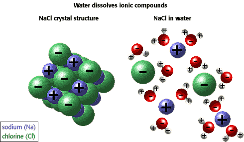
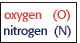
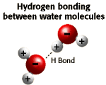
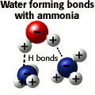

Acids and Bases Problem set
Question 1: Water as a solvent
Tutorial to help answer the questionWhich of the following properties of water explains its ability to dissolve acetic acid?
A. The high surface tension of water, which is due to the formation of hydrogen bonds between adjacent water molecules. B. The ability to serve as a buffer, absorbing the protons given off by acetic acid. C. The ability to orient water molecules so that their polarities neutralize the ions formed when the acid dissociates. D. The ability to form hydrogen bonds with the carbonyl and the hydroxyl groups of acetic acid.
Tutorial
Water, The Major Biological Solvent| Water can stabilize ionized forms of molecules, such as Na+ , Cl- , K+ , Mg+ 2, Ca+ 2, SO4- 2, PO4- 2, and HCO3- . Water molecules adjacent to the ion simply orient themselves in such a way that the partially negative oxygen atoms surround a positive ion, while partially positive hydrogens surround a negative ion. For example, in the illustration below sodium chloride is shown in its crystalline form (left) and dissolved in water (right).  |
Water can form hydrogen bonds
|
The ability of water to form hydrogen bonds with other water molecules or with other polar compounds is important for two reasons:
|
|
|  |   |
| Biomolecules such as sugars, proteins and nucleic acids that contain protruding -NH2 or -OH groups resemble either ammonia or water itself. This resemblance to ammonia or water allows water to form hydrogen bonds with these molecules, resulting in the phenomenal solubility of certain compounds in water. ("100%" solutions of sucrose are possible, i.e. 100mg/100ml!) Both ions and polar molecules are termed hydrophilic because they are readily dissolved in water. | |


Department of Biochemistry and Molecular Biophysics
The University of Arizona
January 11, 1999
Revised: October 2004
Contact the Development Team
http://biology.arizona.edu
All contents copyright © 1999. All rights reserved.